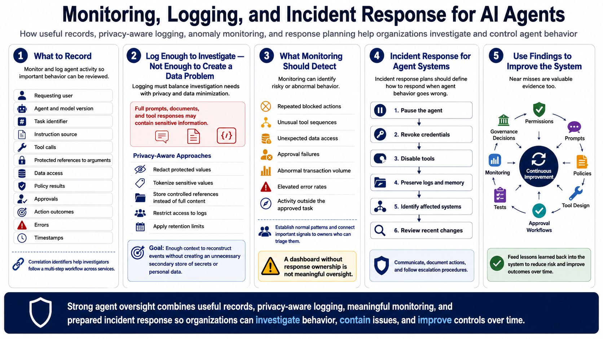

Defending Against Agent Abuse
Monitoring and Logging Agent Activity
Connecting to LMS... Progress: in progress
Version 1.0 | Date: 2026-06-21
This course provides educational information regarding defensive security controls for AI agents. It is not offensive security training, exploit development instruction, or legal advice.

Narration
Organizations should monitor and log agent activity so important behavior can be reviewed. Useful records may include the requesting user, agent and model version, task identifier, instruction source, tool calls, protected references to arguments, data access, policy results, approvals, action outcomes, errors, and timestamps. Correlation identifiers help investigators follow a multi-step workflow across services.
Logging must balance investigation needs with privacy and data minimization. Full prompts, documents, and tool responses may contain sensitive information. Systems can redact or tokenize protected values, store controlled references, restrict access to logs, and apply retention limits. The objective is enough context to reconstruct events without creating an unnecessary secondary store of secrets or personal data.
Monitoring can identify repeated blocked actions, unusual tool sequences, unexpected data access, approval failures, abnormal transaction volume, elevated error rates, or activity outside the approved task. Teams should establish normal patterns and connect important signals to owners who can triage them. A dashboard without response responsibilities does not create meaningful oversight.
Incident response plans should explain how to pause the agent, revoke credentials, disable tools, preserve logs and memory, identify affected systems, and review recent changes. Near misses are valuable evidence too. Findings should feed back into permissions, prompts, policies, tool design, approval workflows, tests, monitoring, training, and governance decisions.